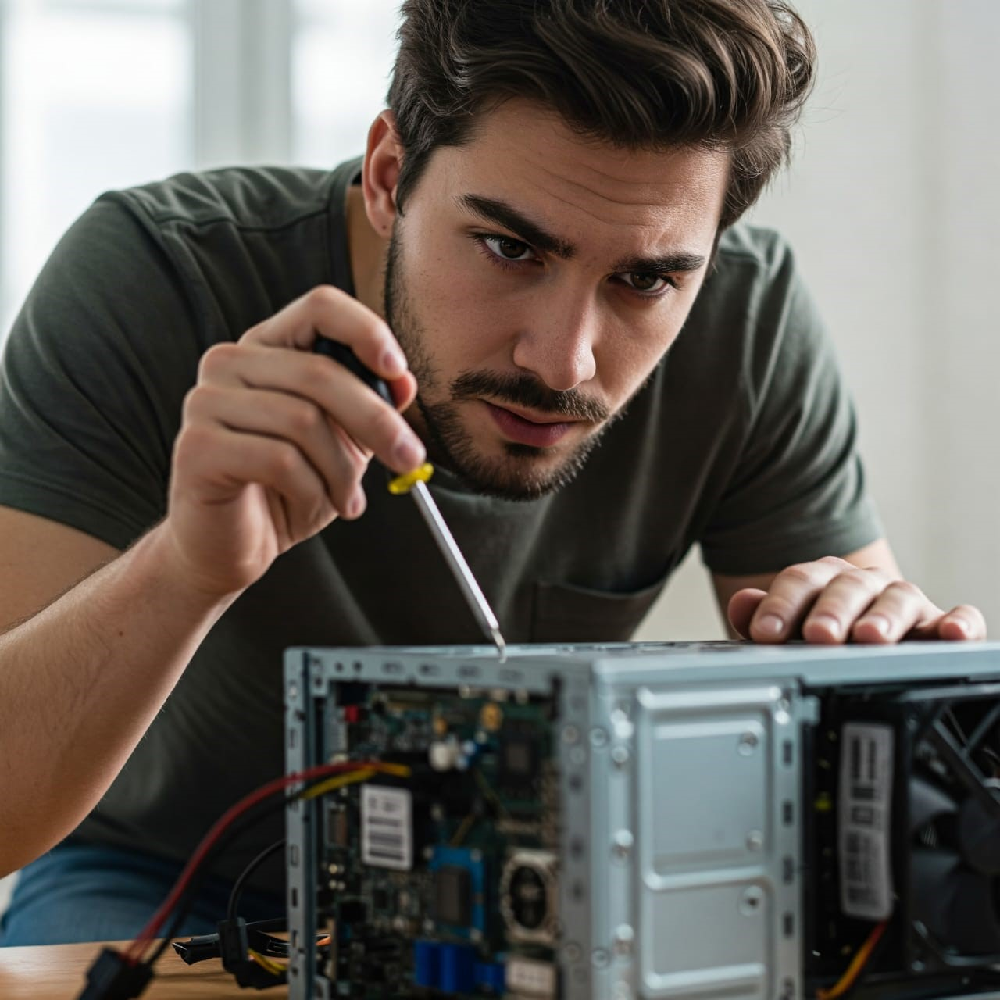
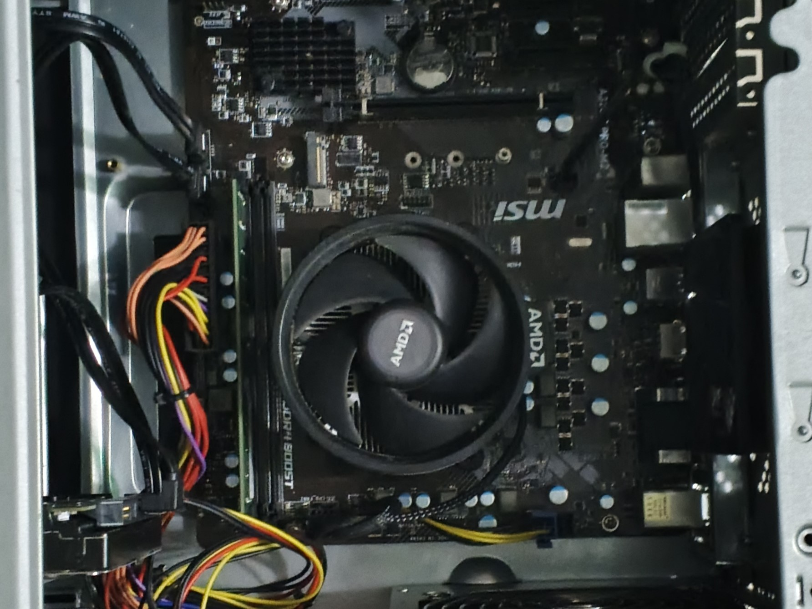

Galería de reparaciones

Actualizamos equipos lentos o con fallas mediante el reemplazo de discos duros tradicionales por unidades de estado sólido (SSD), mejorando notablemente la velocidad de arranque y respuesta. Además, ampliamos la memoria RAM para soportar tareas exigentes y garantizar mayor estabilidad. Durante la instalación, realizamos limpieza interna con soplado de ranuras, ventiladores y módulos, eliminando polvo acumulado que afecta el rendimiento térmico y eléctrico del computador.

Realizamos limpieza profunda de computadores, enfocándonos en ventiladores, disipadores, ranuras de memoria y zonas de flujo térmico. Este proceso elimina polvo acumulado, mejora la circulación de aire y reduce la temperatura interna hasta en 20°C, evitando sobrecalentamientos y fallos por exceso de calor. Ideal para equipos que presentan ruido, lentitud o apagados inesperados por falta de mantenimiento físico.
Publicaciones técnicas
¿Por qué tu computador se pone lento?
Un computador lento puede deberse a múltiples factores: disco duro saturado, exceso de programas en segundo plano, malware, errores en el sistema operativo o falta de mantenimiento físico. En Computénicos Bogotá identificamos la causa real y aplicamos soluciones efectivas sin necesidad de formatear. Optimizamos el arranque, eliminamos archivos basura, desactivamos procesos innecesarios y mejoramos el rendimiento general del equipo, todo desde tu casa en Bogotá o Soacha.
Ventajas de usar SSD en equipos antiguos
Actualizar un equipo antiguo con un disco sólido (SSD) es una de las mejoras más efectivas en velocidad y rendimiento. A diferencia de los discos duros tradicionales (HDD), los SSD ofrecen tiempos de carga hasta 10 veces más rápidos, mayor durabilidad y menor consumo energético. En Computénicos Bogotá realizamos esta mejora sin alterar tu información, logrando que tu computador funcione como nuevo sin necesidad de reemplazarlo.